less语法
1.定义变量
@变量名:值；
@c:10px;
@w:blue;
@hander:hander;
@ba:background-color;2.定义变量类名
#@{变量名}{ }
#@{hander} {
font-size:50px;
color:@w;
@{ba}:yellow;
}3.使用变量属性名
@{定义的属性名}:yellow;
#@{hander} {
font-size:50px;
color:@w;
@{ba}:yellow;
}4.less作用域
less的作用域和js的作用域相似，也有变量提升的
@var:100px;
#@{hander} {
@var:200px;
font-size:@var;
color:@w;
@{ba}:yellow;
}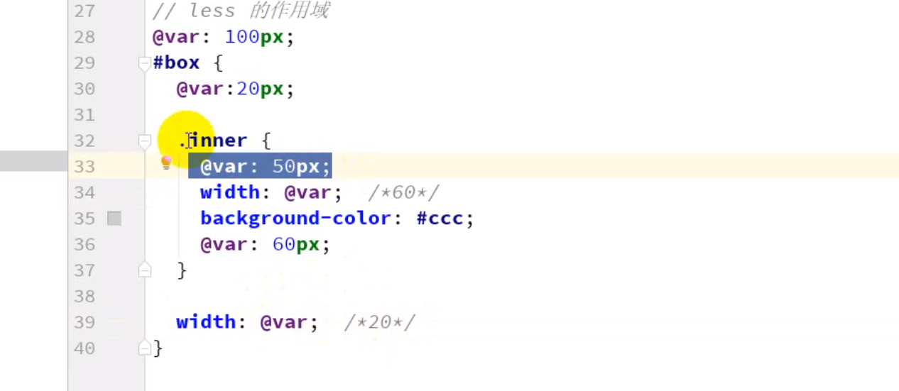
注意：less的变量
1.第一个，使用变量，在本作用域找，找最后面那个
2.没找到就到他父亲去找；
5.less的混合
5.1.混合的使用（混合相当于定义一个函数在其他的地方调用）
//定义普通混合在css中也会定义的
.shouji{
color:red;
font-size: 20px;
width:300px;
height:200;
}
#@{hander} {
//使用混合
.shouji();
}
5.2.不带输出的混合
//不带输出的混合(在css中这段不会显示出来)
.shouji(){
color:red;
font-size: 20px;
width:300px;
height:200;
}
#@{hander} {
//使用混合
.shouji();
}
5.3.带输出的混合
//不带输出的混合(在css中这段不会显示出来)
//带输出的混合
.shouji(@w,@c,@h){
color:@c;
font-size: 20px;
width:@w;
height:@h;
}
#@{hander} {
//传参混合
.shouji(300px,red,200px);
}
5.4.带输出有默认值的混合
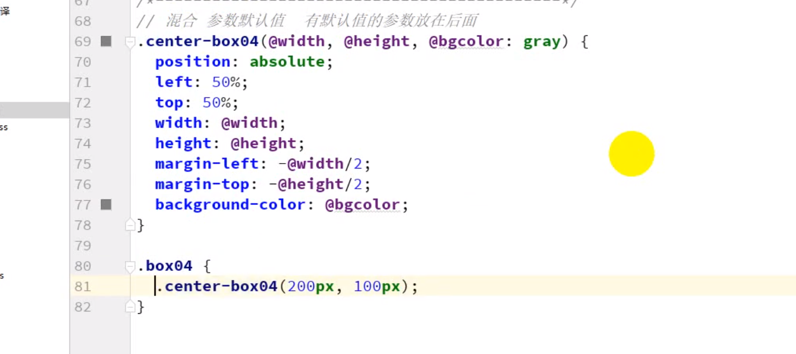
5.5.带输出有指定默认值
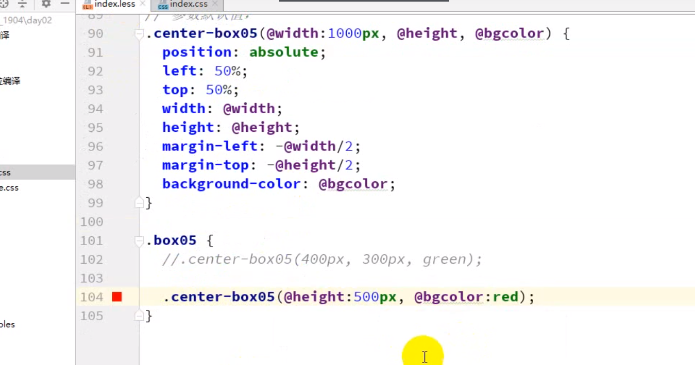
5.6.混合中@arguments的使用
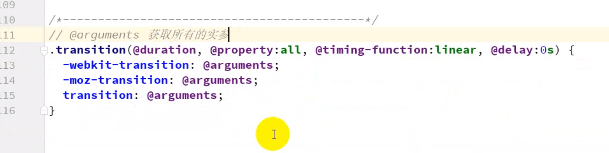
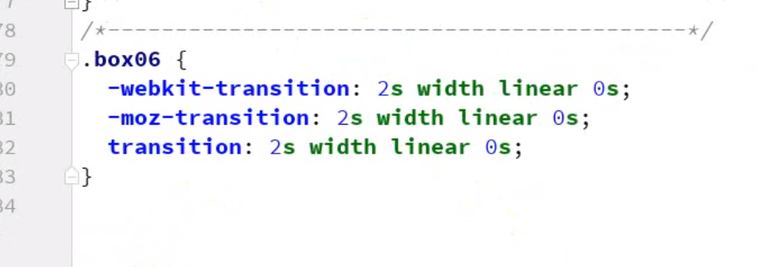
6.less的if和else
如何在less使用判断；
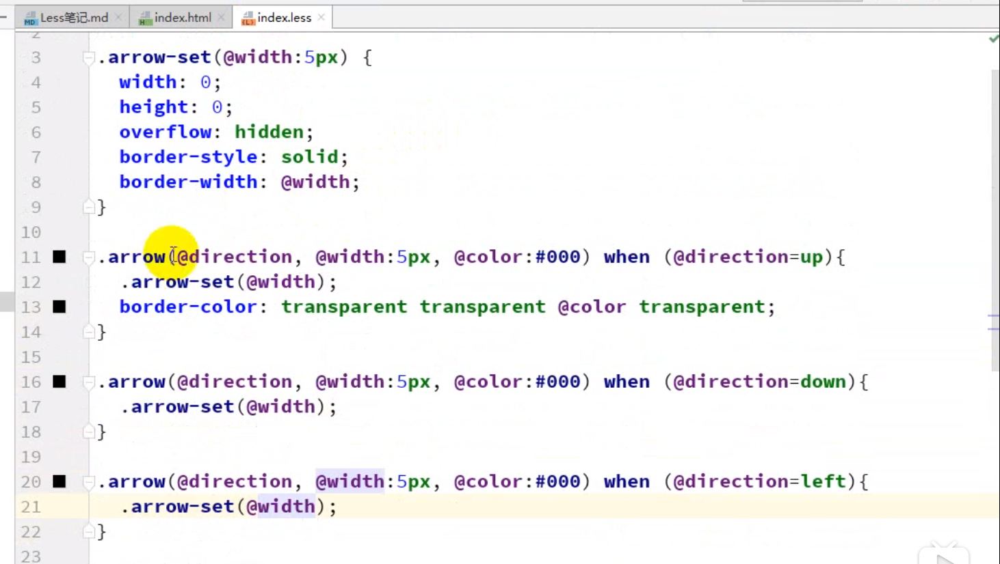
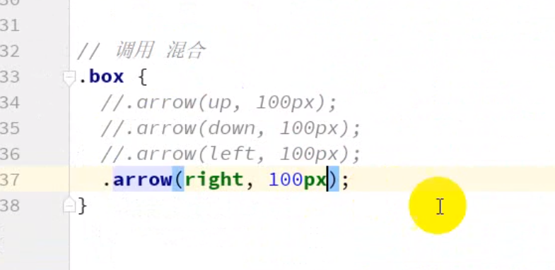
6.less混合的导入
如何在less使用导入的混合
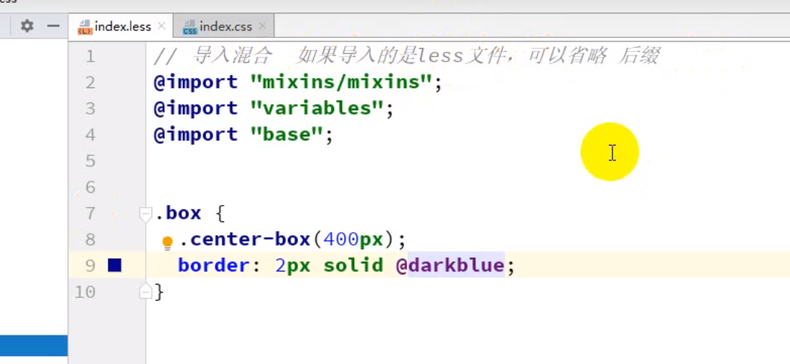
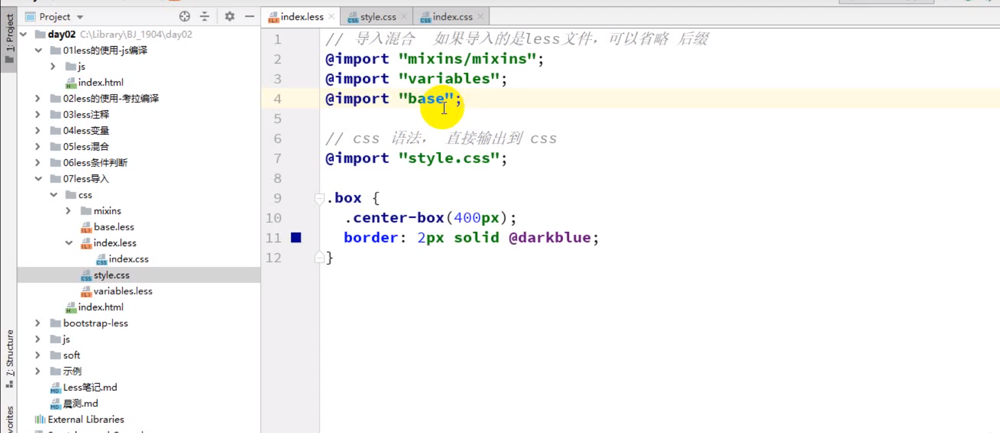
6.less的嵌套使用
6.1.嵌套使用
.hander{
width:500px;
height: 300px;
border: 1px solid #ccc;
margin: auto;
//这是嵌套
li {
height: 20%;
@{ba}:red;
@{bor}:1px solid #ccc;
transition: 0.5s;
>a{
color:yellow;
}
//&是指父选择器
&:hover{
@{ba}:blue !important;
>a{
color:#000;
}
}
&:last-child{
border-bottom:0;
}
&:nth-child(odd){
@{ba}:#ccc;
}
&:nth-child(even){
@{ba}:#fff;
}
}
}
注意：&表示是父级选择器
1.他只是吧父级标签复制下来，如果是这样的
&&就是两个父级的标签
2.他可以吧父级的标签复制下来在做连接
&-buttom
6.2.嵌套使用
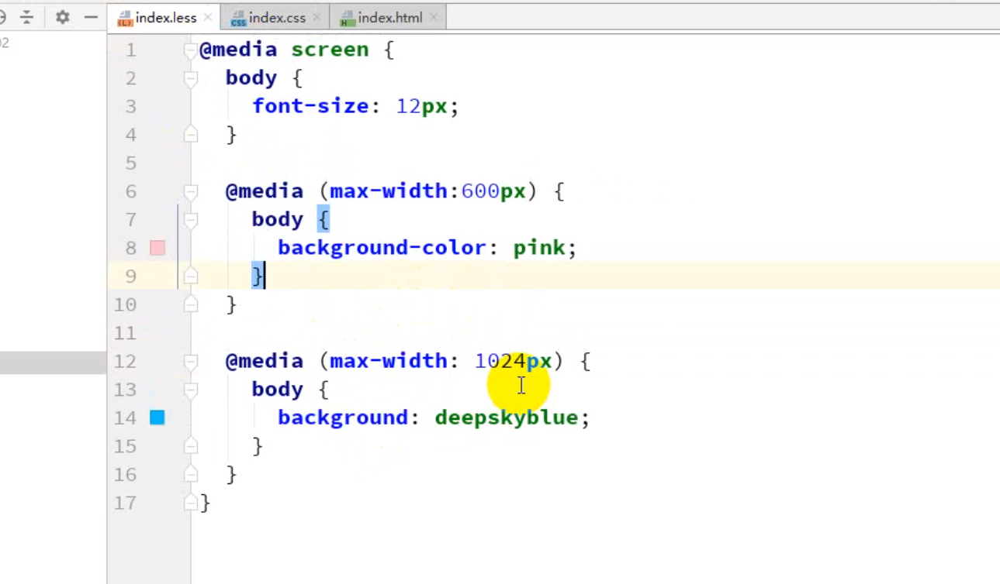
注意：如果没有写选择器的话就会采用父级的
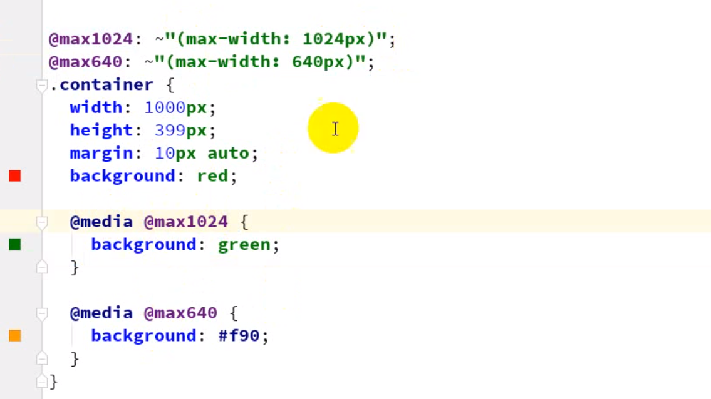
6.less操作符
//操作符
@h:10
.hander{
width:10px * 10px;
height:10px * 10px;
line-height: @h + 50px;
}注意：
1.如果两个单位符不一样以前面为主；
2.如果前面没有单位符就会取后面的；
6.less定义函数
函数定义
//定义函数
#ren(){
color:red;
wan:150px;
}
.handel{
//拿到函数值
color:#ren[wan];
}# less
本博客所有文章除特别声明外，均采用 CC BY-SA 3.0协议 。转载请注明出处！